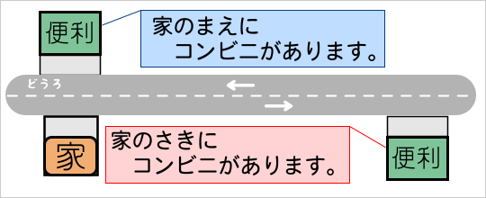
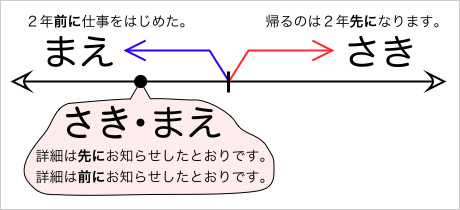
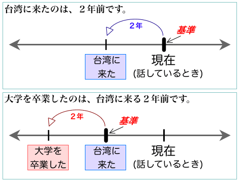
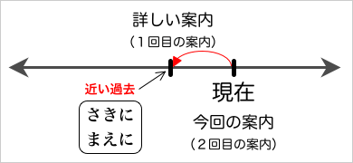
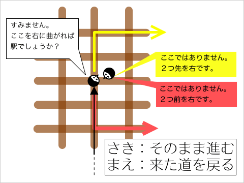
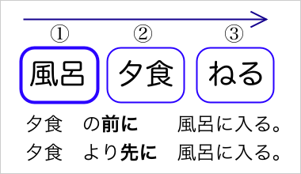
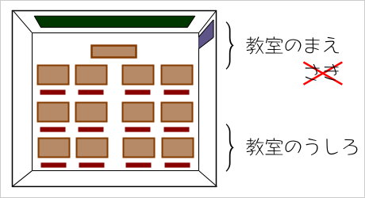
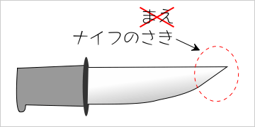

空間を表わす場合
- まえ（前）
- 正面の空間を表わす
- さき（先）
- 進む方向を表わす
「まえ（前）」にも「さき（先）」にも空間を表わす意味がある。空間を表わす場合、「まえ」は正面の空間の全体を指す。一方、「さき」は進む方向を表わす。なお、「正面」とは、人間なら顔が向いている方、家ならば玄関がある方をいう。
「家のまえに」と「家のさきに」
「まえ」には「正面」の意味があるため、
家の前にコンビニがある。
といえば、玄関を出てすぐ近くの場所にコンビニがあることになる。
一方、「さき」は進む方向を表わすので、
家の先にコンビニがある。
といえば、家の前の道を進んだ場所にコンビニがあることになる。

時間を表わす場合
- まえ（前）
-
- 基準となる時間より古いこと（過去）を表わす
- 近い過去を表わす
- さき（先）
-
- 基準となる時間より新しいこと（未来）を表わす
- 近い過去を表わす

「まえ（前）」にも「さき（先）」にも時間を表わす意味がある。時間を表わす場合、「まえ」は過去を、「さき」は未来を指す。
たとえば、基準が2000年ならば、
２年前に仕事を始めた。
といえば、1998年に仕事を始めたことになる。また、
帰るのは、２年先になります。
といえば、2002年に帰って来ることになる。
基準となる時間
基準となる時間は、《今＝話しているとき》あるいは《会話のなかで示された時間》である。
台湾に来たのは、２年前です。
のように、特に時間を指定しなければ《今＝話しているとき》が基準である。また、
大学を卒業したのは、台湾に来る２年前です。
のように、時間を指定しているときは《会話のなかで示された時間》（例文では〈台湾に来たとき〉）が基準である。

なお、「大学を卒業したのは、台湾に来る２年前です。」という文では、『台湾に来る』が『２年前』を修飾する語句になっている。このような場合、現在（話しているとき）よりも過去の出来事であっても、『来る』とル形を使う。『台湾に来た』のようにタ形にすると不自然になる。
近い過去を表わす「まえ」と「さき」
また、「まえ」と「さき」は、どちらも近い過去を表わすことがある。なお、「前」よりも「先」の方がていねいな（硬い表現）である。
- 詳細は前にお知らせしたとおりです。
- 詳細は先にお知らせしたとおりです。〈より硬い表現〉

どちらの例文も近い過去を表わしている。具体的にどの程度の過去をいうかは文脈によって異なるが、例文の場合、「詳細のお知らせ」があったのは１〜２週間から１ヶ月くらい前のことだろう。少なくとも、１年前や２年前といった過去を指していると解釈することは難しい。
※なお、「過去」を表わす場合の「先」は、未来などを表わす場合の「先」とはアクセントが異なるので注意すること。
- 先【名詞】（さき〔0〕）［未来・空間・順番］
- 先【名詞】（さき〔1〕）［過去］
空間を表わす「さき」と時間を表わす「まえ」
文の形が同じでも、「さき」が空間を表わし、「まえ」が時間を表わすことがある。たとえば、道案内をするような場合である。

道案内で、前方に進むことをいう場合には「さき」を使う。「まえ」を使うと、来た道を戻る意味になってしまう。
たとえば、
すみません。ここを右に曲がれば駅でしょうか。
と質問されたとき、
ここではありません。２つ先を右です。
と答えれば、道をそのまま進んで、２つ目の角を右に曲がることになる。一方、
ここではありません。２つ前を右です。
と答えれば、来た道を戻って、２つ目の角を（本来の進行方向に対して）右に曲がることになる。
順序を表わす「まえ」と「さき」
「まえ（前）」にも「さき（先）」にも順序を表わす意味がある。この場合は、「まえ」も「さき」も同じ意味だが、使い方に違いがある。

「前」では、「〜の前に」「〜する前に」の形になるが、「先」ではそうならない。
- 夕食の前に風呂に入る。
- 夕食を食べる前に風呂に入る。
- 夕食の先に風呂に入る。
- 夕食を食べる先に風呂に入る。
「先」では「〜より先に」の形になる。「前」の場合は、やや不自然になる。また、「先」は、「先に」の形で副詞的に用いることもある。
- 夕食より先に風呂に入る。
- ??夕食より前に風呂に入る。
- 先に風呂に入る。
- 前に風呂に入る。
特別な意味
「まえ」にしかない意味
「まえ」には、〈中心や中央よりも先頭や始まりに近い部分〉という意味がある。
たとえば、教室で「前（の方）」といえば、中央よりも黒板や先生に近い部分のことをいう。

「さき」にしかない意味
「さき」には、〈細長いものなどの先端〉という意味がある。
「ナイフの先」、「ペンの先」、「指の先」などのように使う。
